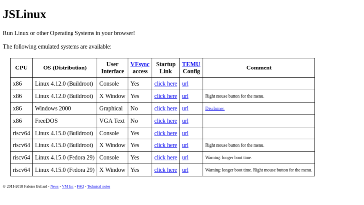

Innovation Inc.
Released: 2018
Our computers can't seem to understand how to use the make command so we made an app that connects directly to the demo website. You can connect your VFsync account to most of the OSes on this site to save your files, so you don't lose everything due to going to the home screen.
Although Innovation Inc. created this application, we did not create Bellard JSLinux.
Bellard JSLinux was completely created by Fabrice Bellard.